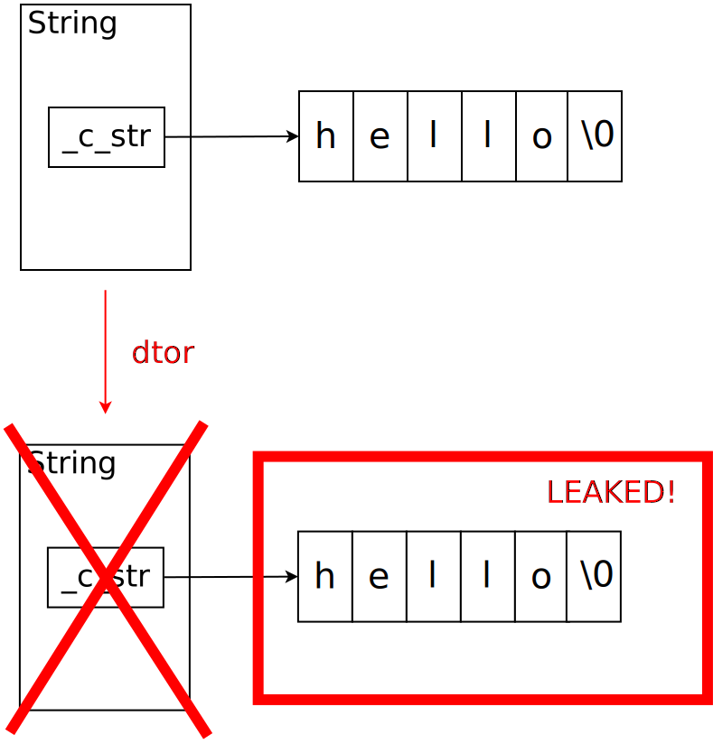

Constructors and Destructors¶
Constructors: why? (1)¶
Initialization in C
left to the programmer
⟶ sheer number of bugs!
struct point A;
|
A remains uninitialized ⟶ random values |
struct point A = {1,2};
|
|
struct point A;
...
A.x = 1;
A.y = 2;
|
|
Constructors: why? (2)¶
Initialization in C++
Programmer has no choice
Whenever programmer thinks about a
pointobject, they have to think about its value⟶ initialization error excluded from the beginning
point A;
|
Compiler error: “void constructor for point not defined” |
point A(1,2);
|
Only possibility to create a |
Constructors: Implementation - Inline¶
Short methods are best defined in the class definition itself ⟶ inline
point.h: inline definition¶class point
{
public:
point(int x, int y)
{
_x = x;
_y = y;
}
// ...
};
Constructors: Implementation - Out-of-Line¶
Long methods are best defined in the implementation file
|
|
|---|---|
class point
{
public:
point(int x, int y);
// ...
};
|
point::point(int x, int y)
{
_x = x;
_y = y;
}
|
Constructors: Initializer List (1)¶
What about ``const`` members?
class point
{
public:
point(int x, int y)
{
_x = x;
_y = y;
}
private:
const int _x;
const int _y;
};
|
|
Constructors: Initializer List (2)¶
Initializer List: different form of assignment - Initialization
class point
{
public:
point(int x, int y) : _x(x), _y(y) {}
private:
const int _x;
const int _y;
};
Default Constructor (1)¶
Constructor without parameter - Default Constructor
class point
{
public:
point() : _x(0), _y(0) {}
point(int x, int y) : _x(x), _y(y) {}
};
...
point p; // -> (0, 0), implicitly
Default Constructor (2)¶
class rectangle
{
point nw;
point se;
};
|
|
Does this “design” make sense?
Always ask whether a default constructor makes sense
Here: rectangle
((0,0),(0,0))⟶ nonsenseIf one wants a real ctor and a default ctor ⟶ define one explicitly
Object Lifecycle - Destructor¶
Like in C. Well almost. The end of an object is …
Scope: end of block
returnfrom function ⟶ end for local objectsExplicit lifetime (dynamic memory):
deleteoperatorStatic (global) lifetime: program termination
In any case: as soon as life is over, the destructor is called
Implicitly defined (compiler generated)
⟶ memberwise destruction
Explicitly defined
Destructors (1)¶
What happens when life is over?
class String
{
public:
String(const char *from)
: _c_str(new char[strlen(from)+1])
{
strcpy(_c_str, from);
}
private:
char *_c_str;
};
Destructors (2)¶
Implementation detail of String:
Heap-allocated memory
Stringis only as big as all of its members⟶
sizeof(char *)(4 or 8 bytes)Data are on the heap ⟶ compiler cannot help
⟶ variable length
Destructors (3)¶
void f()
{
String s("hello");
...
// LEAKED 6 bytes!
}
|
 |
Destructors (4)¶
Solution: program a destructor
class String
{
public:
~String()
{
delete[] _c_str;
}
};
Not only with dynamically allocated memory
… but with all kinds of explicit resource allocation (e.g. file descriptors)
More details for
newanddelete⟶ later